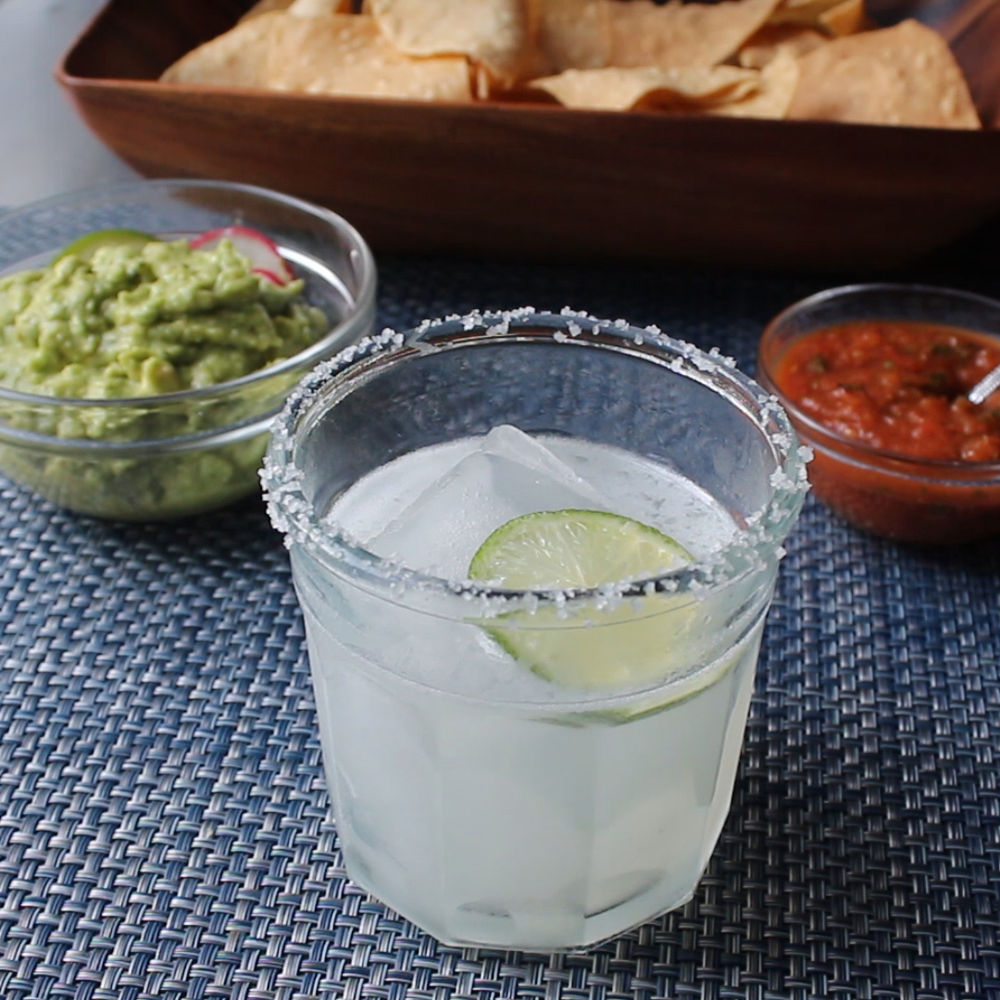

The Perfect Margarita

A really easy cocktail to replicate!
Ingredients
- 1 lime wedge
- 1 pinch coarse sea salt to taste
- 1 large ice cube
- Ice
- 2 fluid ounces white tequila
- 1½ fluid ounces triple sec
- 1 fluid ounce freshly squeezed lime juice
- 1 slice lime
Steps
-
Moisten the rim of a glass with a lime wedge.
Sprinkle salt onto a plate.
Lightly dip the moistened rim into the salt.
Place a large ice cube in the glass and freeze the prepared glass until ready to serve.
-
Fill a cocktail shaker with fresh ice.
Add tequila, triple sec, and lime juice.
Cover and shake vigorously until outside of the shaker has frosted.
Strain into the prepared glass and garnish with a slice of lime.
- And that's the perfect margarita folks.